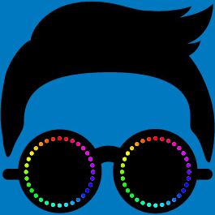

2001년 파격적인 노랫말이 돋보이는 곡 ‘새’로 데뷔한 가수 싸이는 12년 동안 자신만의 독특한 음악적 컬러를 유지하며 대중에게 꾸준히 사랑 받고 있다. '챔피언', '낙원', '연예인', 'Right Now', '흔들어주세요' 등 수많은 히트곡들을 선보인 그가 2012년 정규 6집 앨범 '싸이6甲 PART 1'을 발표하고 타이틀 곡 ‘강남스타일’로 다시 한번 가요계를 뜨겁게 달궜다. 싸이는 전세계 음악 팬들이 주목하는 시상식 '2012 MTV Video Music Awards' 에 한국을 대표하는 아티스트로서 참석했으며, 한국 가수로는 최초로 유튜브 조회수 1억 건을 돌파하고, 미국 아이튠즈 TOP SONGS 차트 10위권 대에 진입하는 최고 기록을 세우면서 K-POP 역사의 새로운 장을 열었다. 매년 자신의 브랜드 콘서트인 '싸이의 썸머 스탠드 훨씬 THE 흠뻑쑈'를 개최하고 있는 그는 파격적인 댄스 퍼포먼스, 감동을 전하는 노랫말, 재치 넘치는 무대 매너를 선보이며 보다 많은 팬들과 호흡 하고자 노력하고 있다.
윈도우 7의 젠틀한 브라우저는 IE 10, XP 이하면 IE를 제외한 브라우저가 젠틀합니다.
모바일에서도 이 사이트를 경험해 보세요. 자비로운 테마 화면을 드립니다.